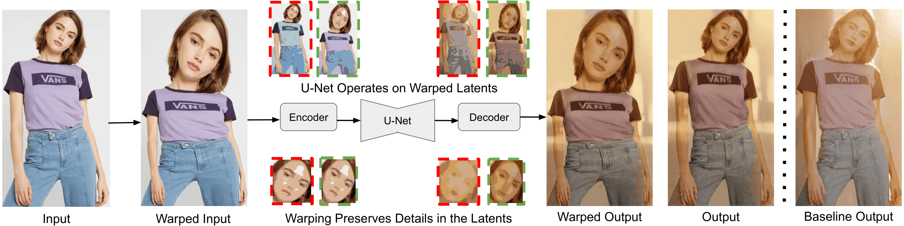
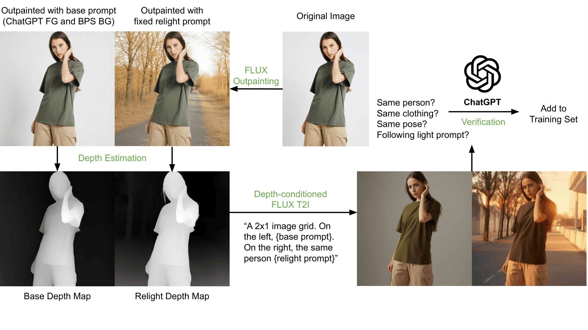
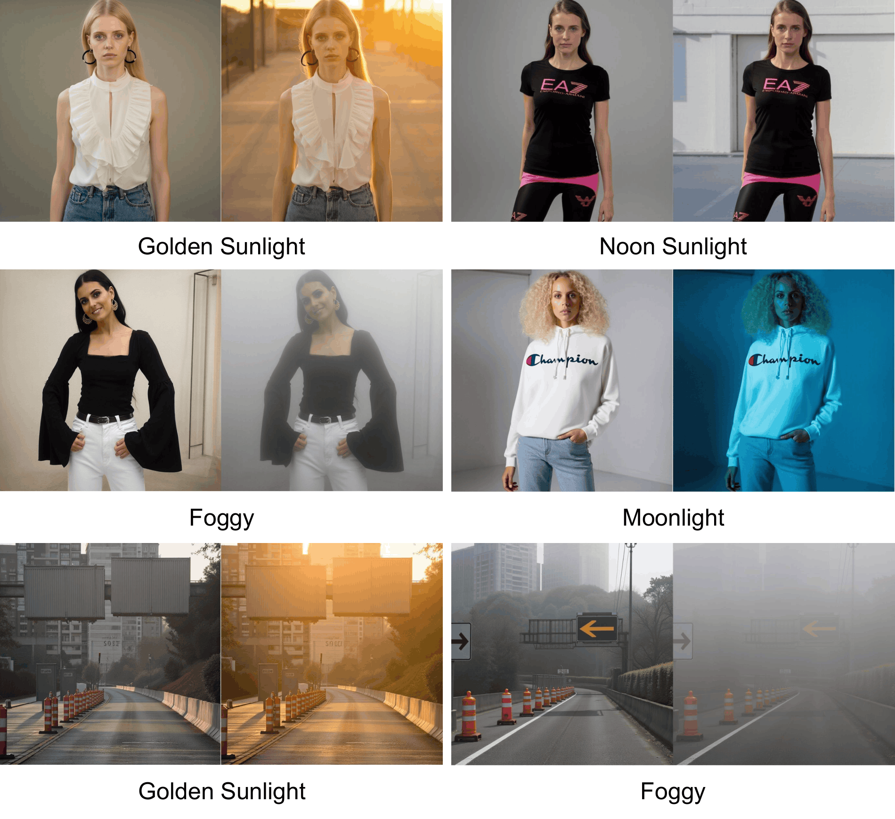
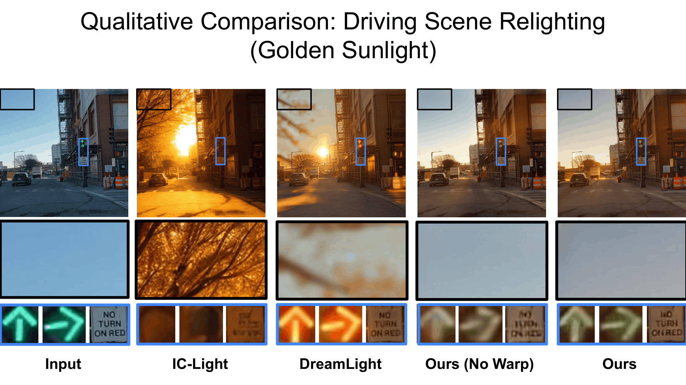
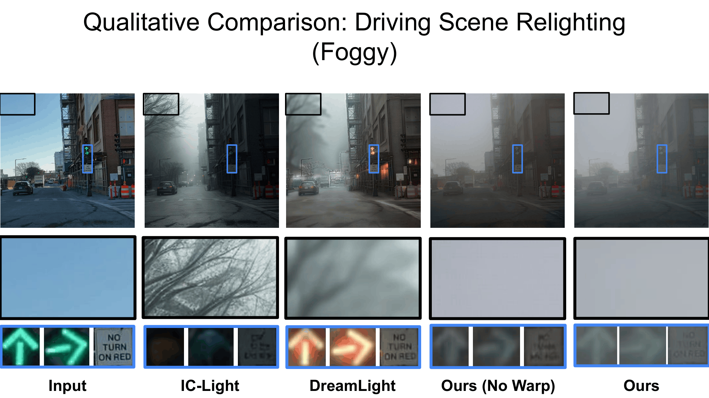
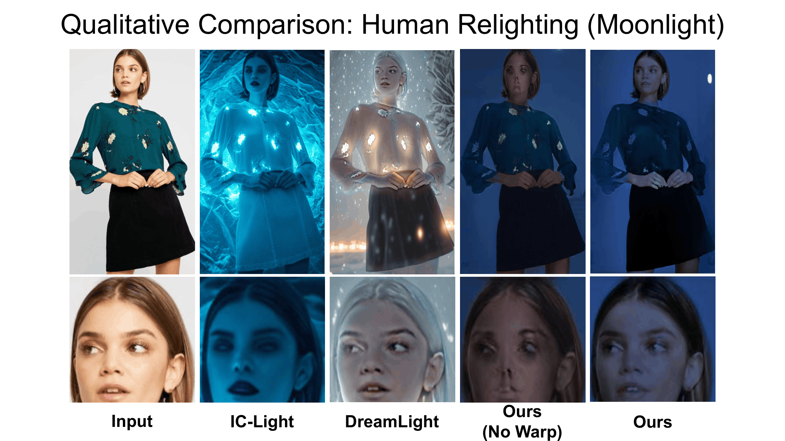
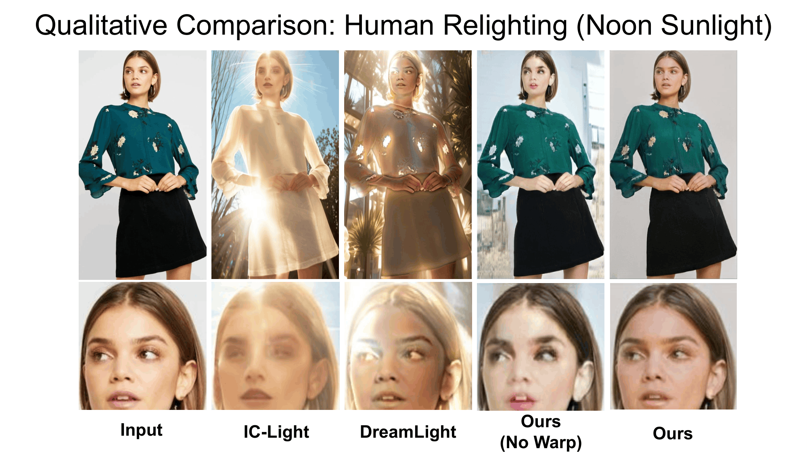

Our saliency-guided image warping framework enlarge salient regions via image warping to better preserve fine details under extreme latent compression (e.g., 8x).
TL;DR: We warp the input image to enlarge salient regions (e.g., objects, faces, eyes) to better preserve fine details in the compressed latent space during image-to-Image translation.
| Input | Golden Sunlight | Foggy |
| Input | Derained |

Our saliency-guided image warping framework enlarge salient regions via image warping to better preserve fine details under extreme latent compression (e.g., 8x).

We design a synthetic data pipeline to generate training pairs for our model. Starting from an original image, we first apply FLUX outpainting to create base and relit scenes. We then estimate depth via Depth Anything and perform depth-conditioned generation. Finally, ChatGPT verifies the pair before adding it to the training set.

Synthetic training pairs generated by our pipeline provide diverse and high-quality supervision for paired training.
Input | IC-Light | Ours
Input | IC-Light | Ours

Previous methods often change the shape or color of traffic arrows and hallucinate details in the sky and traffic signs. In contrast, our method with warping preserves these structures and produces more realistic results.

Compared with prior methods, our approach with warping better preserves scene structures and produces more consistent fog effects.

Prior methods often distort facial and clothing identity or produce unrealistic lighting that does not match the prompt. In contrast, our method with warping preserves facial details and generates more realistic relighting results.

Compared with prior methods, our approach with warping better preserves facial details and produces more realistic lighting.